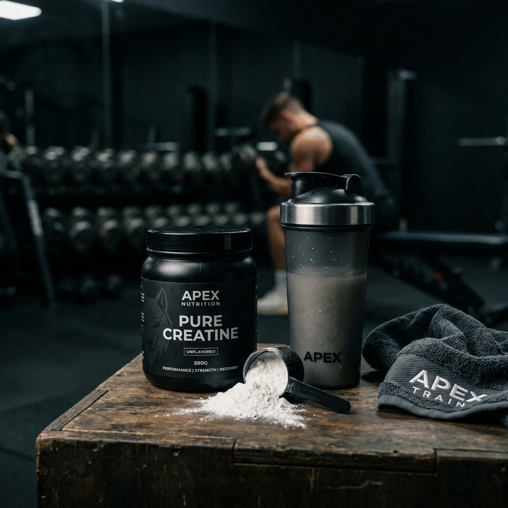

Creatina: O Suplemento Mais Estudado para Ganho de Massa e Cérebro

Pin ItFrequentemente confundida apenas com estética ou "coisa de academia", a **Creatina** é, na verdade, um composto orgânico fundamental que fornece energia rápida para todas as células do corpo. Ela é, hoje, o suplemento número um tanto para atletas de alta performance quanto para idosos que buscam preservar sua qualidade de vida e independência.
Se você quer entender por que a ciência é tão apaixonada por esse suplemento, este guia vai te mostrar que os benefícios da Creatina vão muito além dos músculos.
Aumento da Performance Física
A creatina aumenta as reservas de fosfocreatina nos músculos. Isso permite que o corpo produza mais **ATP**, a molécula de energia básica do organismo. Na prática, isso significa que você consegue treinar com mais intensidade, levantar mais peso e se recuperar muito mais rápido entre as séries e treinos.
Força Explosiva
Melhora o desempenho em atividades de alta intensidade, como musculação e sprints.
Saúde do Cérebro
Atua na proteção dos neurônios e melhora a função executiva em momentos de cansaço mental.
Preservação Muscular
Ajuda a manter a massa magra durante dietas de emagrecimento ou com o passar da idade.
Benefícios Cognitivos Surpreendentes
O que pouca gente sabe é que o cérebro também utiliza grandes quantidades de ATP. Estudos recentes demonstram que a suplementação de creatina traz melhorias na memória de curto prazo e na capacidade de raciocínio, especialmente em pessoas sob estresse ou com privação de sono.
Como Tomar com Segurança
A dose padrão recomendada pela maioria dos especialistas é de **3g a 5g por dia**. Não há necessidade de fazer pausas ("ciclar") ou interromper o uso, pois a creatina é segura para uso a longo prazo, desde que acompanhada de uma hidratação adequada ao longo do dia.
🔍 Qual Creatina Escolher?
Dê preferência para a Creatina Monohidratada Micronizada, de preferência com o selo de pureza Creapure. Ver na Shopee
Perguntas Frequentes (FAQ)
1. Creatina dá pedra no rim?
Não. Esse é um mito antigo. Estudos de longa duração provaram que a creatina não prejudica rins saudáveis. Apenas quem já possui doença renal prévia deve consultar um médico.
2. Precisa fazer "fase de carga"?
Não é obrigatório. Tomar 20g por dia na primeira semana apenas acelera o preenchimento dos estoques, mas tomar 5g desde o primeiro dia entrega o mesmo resultado em cerca de 20 a 30 dias.